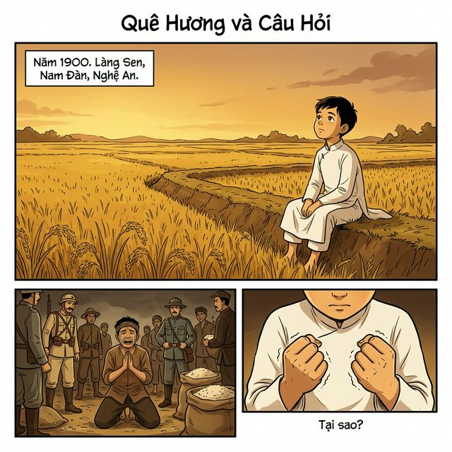
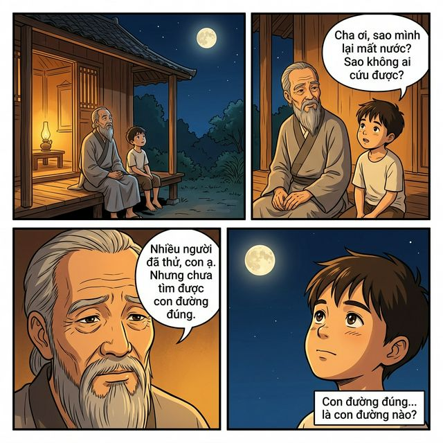
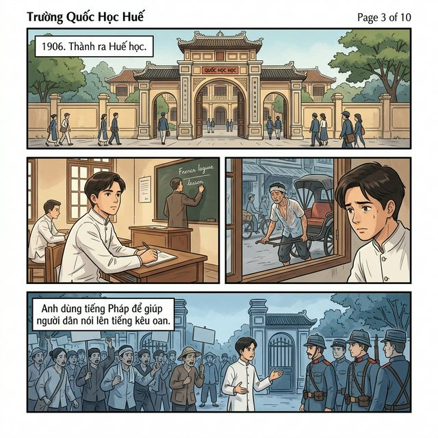
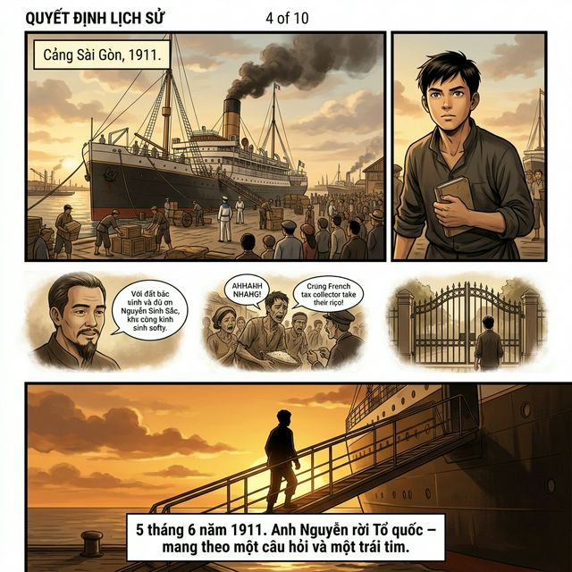
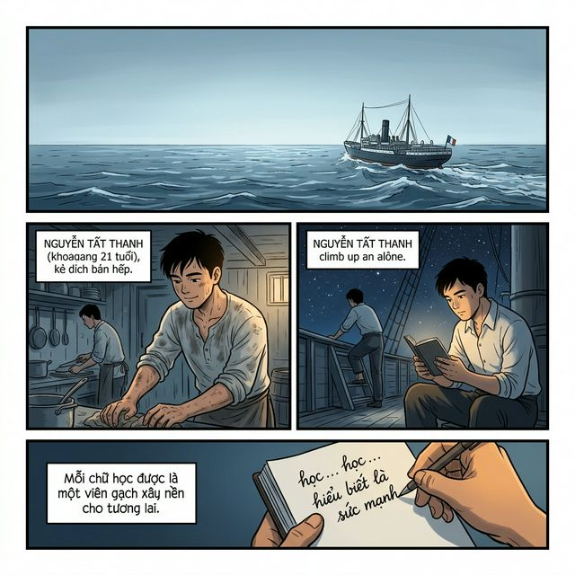
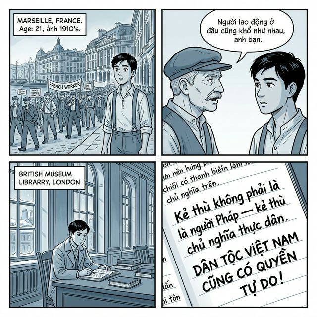
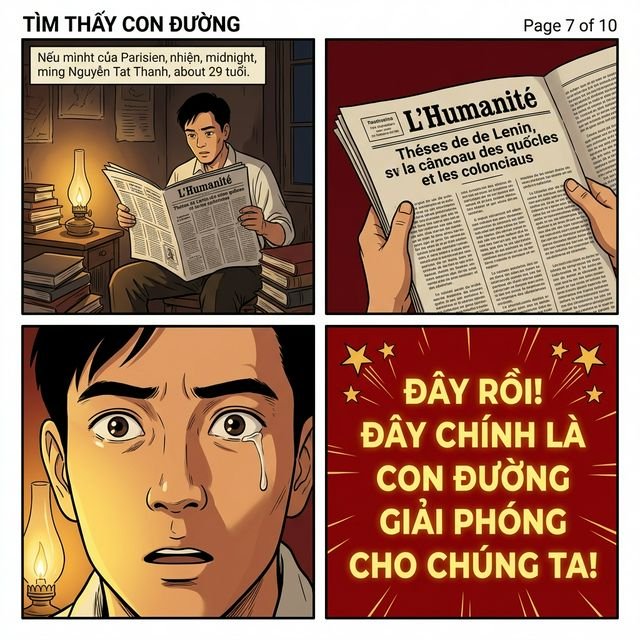

Quê Hương và Câu Hỏi
Chương 1 — Hạt giống · Năm 1900, Làng Sen

🌾 Vàng đấtCác panel trong trang này
- P1 Cánh đồng làng Sen vàng rực — cậu bé Thành 10 tuổi ngồi nhìn trời
- P2 Lính Pháp thu thuế thóc — nông dân quỳ lạy khóc lóc
- P3 Cận cảnh bàn tay nhỏ nắm chặt, run — "Tại sao?"
Đêm Tâm Sự Cha Con
Chương 1 — Hạt giống · Câu hỏi được gieo

🌙 Vàng đêmCác panel trong trang này
- P1 Cha con ngồi hiên nhìn trăng, ánh đèn dầu vàng ấm
- P2 Thành hỏi: "Cha ơi, sao mình lại mất nước?"
- P3 Cha đáp: "Nhiều người đã thử... nhưng chưa tìm được con đường đúng."
- P4 Cận mắt Thành nhìn trăng — "Con đường đúng... là con đường nào?"
Trường Quốc Học Huế
Chương 2 — Ra đi để trở về · Năm 1906

🏛️ Xám xanhCác panel trong trang này
- P1 Cổng trường Quốc học Huế — 1906, Thành 16 tuổi ra Huế học
- P2 Trong lớp học, Thành chăm chú nghe giảng tiếng Pháp
- P3 Qua cửa sổ: phu kéo xe mồ hôi ướt — ánh mắt Thành đau xót
- P4 Thành dịch lời cho bà con biểu tình trước cổng trường
Quyết Định Lịch Sử
Chương 2 — Ra đi để trở về · 5/6/1911

⚓ Hoàng hôn vàngCác panel trong trang này
- P1 Cảng Sài Gòn — con tàu Pháp khổng lồ cập bến, 1911
- P2 Thành 21 tuổi nhìn tàu — mắt kiên định, tay cầm quyển sách nhỏ
- P3 Flashback ký ức: cha, dân khóc, cổng trường đóng lại
- P4 Thành bước lên tàu, không nhìn lại — "5 tháng 6 năm 1911..."
Vượt Đại Dương
Chương 3 — Bôn ba · Học từ sóng biển

🌊 Xanh đại dươngCác panel trong trang này
- P1 Con tàu giữa đại dương mênh mông — bầu trời rộng lớn
- P2 Thành làm phụ bếp, tay chai, áo đẫm mồ hôi
- P3 Đêm khuya — Thành lên boong tàu đọc sách dưới ánh sao
- P4 Cận trang sổ tay — "Mỗi chữ học được là một viên gạch..."
Ánh Sáng Từ Nước Người
Chương 3 — Bôn ba · Marseille — London

🌍 Xám lạnh châu ÂuCác panel trong trang này
- P1 Marseille — công nhân Pháp đình công, Thành đứng nhìn tò mò
- P2 Người công nhân già nói: "Người lao động ở đâu cũng khổ như nhau..."
- P3 Thư viện London — tuyết ngoài cửa, Thành đọc sách cách mạng
- P4 Sổ tay: "Kẻ thù là chủ nghĩa thực dân. DÂN TỘC VIỆT NAM CŨNG CÓ QUYỀN TỰ DO!"
Tìm Thấy Con Đường
Chương 4 — Ánh sáng lý luận · Paris, 1920

🔥 Đỏ son — Bước ngoặtCác panel trong trang này
- P1 Căn phòng nhỏ Paris, đêm khuya — Thành mở tờ báo L'Humanité
- P2 Cận tay cầm báo — bài Luận cương của Lênin về vấn đề dân tộc
- P3 ★ Cận mặt Thành — mắt mở to, giọt nước mắt lăn, xúc động mạnh nhất
- P4 Nền đỏ, chữ vàng lớn: "Đây rồi! Đây chính là con đường giải phóng!"
Tiếng Nói Được Lắng Nghe
Chương 4 — Ánh sáng lý luận · Đại hội Tours, 12/1920
Trang đang chờ sinh ảnh
Hạn mức sinh ảnh AI đã tạm hết. Trang này sẽ được hoàn thiện khi quota được làm mới (khoảng 7 ngày).
⏳ Quota reset ~18/05/2026Kịch bản trang 8
- P1 Hội trường Đại hội Tours, Pháp, đông người — ánh đèn rực rỡ
- P2 Thành đứng phát biểu: "Tôi nói nhân danh toàn thể nhân loại bị áp bức..."
- P3 Tiếng vỗ tay vang lên — Thành bỏ phiếu gia nhập Đệ tam Quốc tế
- P4 Thành ngồi một mình bên cửa sổ đêm Paris — "Một ngày nào đó sẽ trở về..."
Ngày Trọng Đại
Chương 5 — Hạt giống nảy mầm · 2/9/1945
Trang đang chờ sinh ảnh
Hạn mức sinh ảnh AI đã tạm hết. Trang này sẽ được hoàn thiện khi quota được làm mới.
⏳ Quota reset ~18/05/2026Kịch bản trang 9
- P1 ★ Quảng trường Ba Đình 2/9/1945 — biển người, cờ đỏ sao vàng tung bay
- P2 Bác Hồ đứng trước micro — trang nghiêm, lịch sử
- P3 "Tất cả mọi người đều sinh ra có quyền bình đẳng..."
- P4 Khuôn mặt người dân — già trẻ, nước mắt hạnh phúc
Vòng Tròn Khép Lại
Kết thúc — Câu hỏi của một đứa trẻ đã thay đổi lịch sử
Trang đang chờ sinh ảnh
Đây là trang kết — Bác Hồ ngồi dưới gốc cây, trẻ em vây quanh lắng nghe, ánh chiều vàng.
⏳ Quota reset ~18/05/2026Kịch bản trang 10
- P1 Flashback: cậu bé Thành 10 tuổi nhìn trời — "Một câu hỏi của một đứa trẻ..."
- P2 Hiện tại: Bác Hồ nhìn lên trời — cùng ánh mắt ấy
- P3 Hai hình chồng lên nhau — cậu bé và người cha của dân tộc
- P4 ★ Bác ngồi dưới gốc cây, trẻ em vây quanh, ánh chiều vàng rực